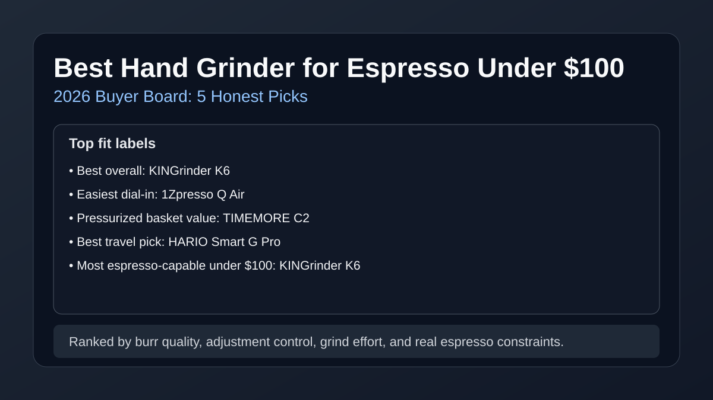

Best Hand Grinder for Espresso Under $100 (2026): 5 Honest Picks
Most hand grinders under $100 can make drinkable espresso, but only a few are consistent enough to avoid daily dial-in frustration. This guide focuses on practical espresso outcomes, including where pressurized baskets hide grinder limits and where non-pressurized baskets expose them.

Direct answer: The best hand grinder for espresso under $100 is usually KINGrinder K6 for click precision and repeatability. If you want easier daily use with pressurized baskets, 1Zpresso Q Air and TIMEMORE C2 are safer. At this budget, expect trade-offs in speed, burr alignment, and shot-to-shot consistency on non-pressurized baskets.
TL;DR winners
Best overall under $100: KINGrinder K6
Best easiest dial-in: 1Zpresso Q Air
Best for pressurized baskets: TIMEMORE Chestnut C2
Best travel option: HARIO Smart G Pro
Best for strict sub-$50 spend: JavaPresse Manual Grinder
Comparison table
Prices checked: March 2026
| Product | Best for | Street price | Burr material | Adjustment style | Capacity | Grind effort for 18g | Espresso suitability | Cleanup effort | Price band | Check price |
|---|---|---|---|---|---|---|---|---|---|---|
| KINGrinder K6 | Most complete espresso fit under $100 | $95–$99 | Steel | External stepped, fine click spacing | 30g | 45–70 sec; medium arm load | Capable-with-compromise | Low | $$ | Check price |
| 1Zpresso Q Air | Easiest daily workflow | $69–$79 | Steel | External stepped, beginner-friendly ring | 20g | 40–65 sec; medium arm load | Pressurized-only | Low | $$ | Check price |
| TIMEMORE Chestnut C2 | Best value for starter espresso kits | $55–$69 | Steel | Internal stepped, coarse click increments | 25g | 50–80 sec; medium-high arm load | Pressurized-only | Medium | $ | Check price |
| HARIO Smart G Pro | Travel espresso backup | $54–$64 | Ceramic | Internal stepped, wide jumps | 24g | 75–110 sec; high arm load | Pressurized-only | Medium | $ | Check price |
| JavaPresse Manual Grinder | Absolute minimum spend | $26–$35 | Ceramic | Internal stepped, limited precision | 18g | 90–130 sec; high arm load | No | High | $ | Check price |
Top picks by budget tier and use case
How we evaluate: We score each grinder on brew quality, grinder consistency, usability, cleaning burden, and value for money, then adjust for espresso-specific realities like click granularity and shot recovery speed.
1) KINGrinder K6 — Best hand grinder for espresso under $100 overall
Verdict: Best fit for buyers who want the highest chance of usable non-pressurized espresso below the $100 cap.
Buy this if... you care more about repeatable dial-in than minimum arm effort.
Skip this if... you only run pressurized baskets and want the cheapest acceptable option.
Espresso realism: Works on non-pressurized baskets for medium roasts, but still needs careful puck prep and patient micro-adjustments.
Pros
- Fine click spacing improves shot-time targeting under budget constraints.
- Steel burr set handles espresso better than most entry ceramic designs.
- Build quality is sturdy enough for daily grinding.
Cons
- Still slower than any decent electric espresso grinder.
- Can feel heavy to crank on dense light roasts.
Key specs: ~48 mm steel burr set · external stepped adjustment · 30g capacity.
Retention/static note: Very low retention and minimal static because grounds path is short and fully manual.
2) 1Zpresso Q Air — Best easiest dial-in workflow
Verdict: Smart pick for beginners who want clean build quality and easy click tracking at a lower price.
Buy this if... your priority is predictable, low-friction daily use over max espresso precision.
Skip this if... you demand reliable non-pressurized espresso at very tight shot windows.
Espresso realism: Best with pressurized baskets; non-pressurized shots are possible but inconsistent across bean changes.
Pros
- Smooth crank feel and easy handling for most users.
- External adjustment is faster to learn than internal systems.
- Good all-around range if you also brew pour over.
Cons
- Limited click granularity for advanced espresso tuning.
- Smaller capacity means more refill cycles for larger drinks.
Key specs: steel burr · external stepped ring · 20g capacity.
Retention/static note: Retention stays low; static is usually mild unless beans are very light and dry.
3) TIMEMORE Chestnut C2 — Best for pressurized-basket espresso starters
Verdict: Best value if your espresso machine uses pressurized baskets and you want reliable grind quality per dollar.
Buy this if... you need a flexible grinder for espresso-like drinks plus filter coffee on a tighter budget.
Skip this if... your main goal is non-pressurized espresso consistency every day.
Espresso realism: Pressurized baskets: solid. Non-pressurized baskets: click jumps are often too coarse for clean repeatability.
Pros
- Strong value and broad availability.
- Steel burr design outperforms many ceramic alternatives at similar prices.
- Balanced option for mixed brewing methods.
Cons
- Internal adjuster slows down iterative espresso dialing.
- Can produce more fines than premium hand grinders.
Key specs: steel burr · internal stepped adjustment · 25g capacity.
Retention/static note: Retention is low, but fines can cling internally if cleaning cadence slips.
4) HARIO Smart G Pro — Best travel hand grinder under $100 for espresso kits
Verdict: Good backup/travel grinder when weight and portability matter more than shot precision.
Buy this if... you want a lightweight manual grinder for travel with portable espresso makers.
Skip this if... you want quick grinding and dependable non-pressurized shot control.
Espresso realism: Better for pressurized baskets; ceramic burr speed and adjustment resolution limit true espresso control.
Pros
- Portable footprint and travel-friendly design.
- Simple construction and easy replacement parts.
- Affordable way to avoid blade grinders on trips.
Cons
- Slower grind speed than steel-burr competitors.
- Higher fatigue for dense beans at espresso settings.
Key specs: ceramic burr · internal stepped adjustment · 24g capacity.
Retention/static note: Low static, but ceramic sets can retain micro-fines without frequent brushing.
Check Smart G Pro price on Amazon
5) JavaPresse Manual Grinder — Best sub-$35 emergency budget option
Verdict: Only worth buying when budget is extremely constrained and expectations are set to basic brew quality.
Buy this if... you need the absolute lowest-cost manual grinder right now.
Skip this if... you want reliable espresso dialing with either basket type.
Espresso realism: Not recommended for true espresso; acceptable only for coarse-to-medium brews.
Pros
- Very low entry price.
- Compact body for light travel use.
Cons
- Limited burr stability hurts espresso consistency.
- Grinding effort and time are significantly higher.
- Durability and alignment variance are common.
Key specs: ceramic burr · internal stepped adjustment · 18g capacity.
Retention/static note: Static can stay low, but internal fines retention is relatively high for its class.
Check JavaPresse price on Amazon
Workflow realism: grind time, effort, and retention
Typical grind time (18g espresso dose): 40–80 seconds for better steel-burr options, 75–130 seconds for cheaper ceramic models.
Arm effort reality: Dense light roasts raise torque sharply. If multiple milk drinks are part of your morning, manual grinding quickly becomes the bottleneck.
Retention/static expectations: Most hand grinders retain little coffee, but low-cost internals can trap fines. A weekly brush routine matters more than anti-static gimmicks.
Dial-in mini playbook (so you stop chasing your tail)
- Start near the grinder's espresso reference point, then pull a 1:2 shot in 28–32 seconds.
- If shot is too fast: tighten 1–2 clicks. If too slow: open 1 click.
- Change only one variable at a time (grind first, then dose, then yield).
- Log your click number and bean roast level to accelerate future re-dials.
- If your grinder has coarse click jumps, use a slightly lower dose to smooth target time.
For deeper workflow tuning, use our espresso grinder settings guide and pair with a stable dose routine from our best coffee scale roundup.
FAQ
Can a hand grinder under $100 make real espresso?
Some can, but only a few do it consistently on non-pressurized baskets. Models like KINGrinder K6 give the best chance; many cheaper options are better matched to pressurized baskets.
Is a manual grinder better than a cheap electric grinder for espresso?
Often yes at this budget. Manual grinders frequently provide better burr quality per dollar, but you pay in grind speed and physical effort.
Steel vs ceramic burr for budget espresso: what matters more?
For espresso, steel burrs usually win. They grind faster, hold alignment better, and provide more predictable particle distribution for shot dialing.
How long should grinding 18g for espresso take by hand?
Expect about 40–80 seconds on stronger steel-burr hand grinders and 75–130 seconds on lower-cost ceramic models, depending on roast density and burr sharpness.
Can I use these grinders with non-pressurized baskets?
Some, with compromise. Under $100, only the top options have enough click precision for reliable non-pressurized dialing. Pressurized baskets are safer with lower-tier models.
How often should I clean and recalibrate a hand grinder?
Brush out grounds weekly, deep-clean monthly, and re-zero/recalibrate after disassembly or burr changes. This keeps click behavior consistent and prevents stale fines from skewing shots.
Related guides
- Burr Grinder Settings for Espresso (Dial-In Guide)
- Best Burr Grinder for Espresso (2026)
- Best Manual Coffee Grinder Under $100
- Best Espresso Machine Under $200 (2026)
- How to Clean a Burr Coffee Grinder (Fast Routine)